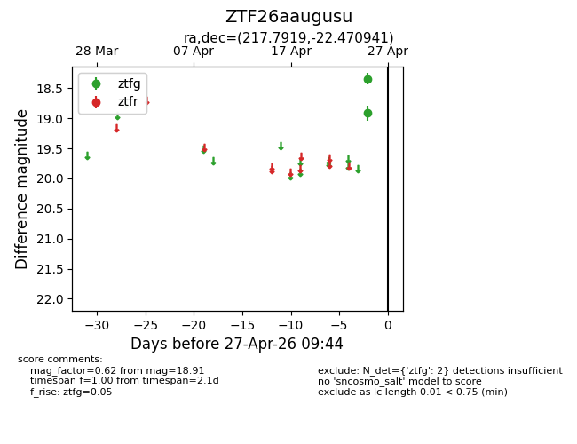
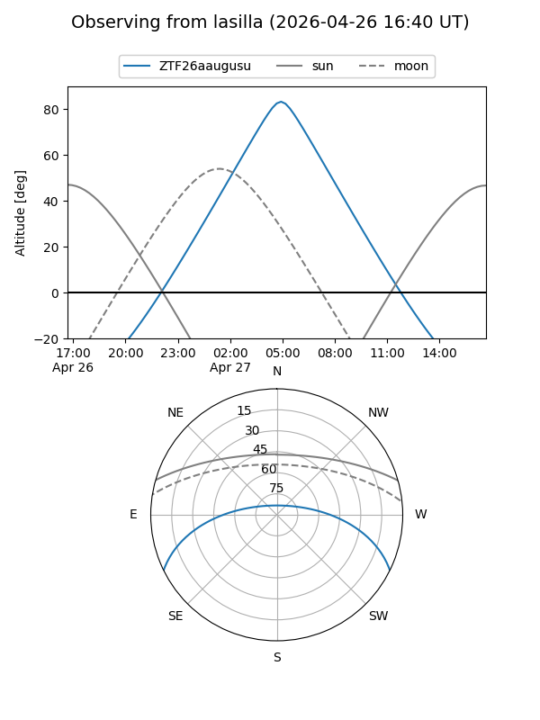
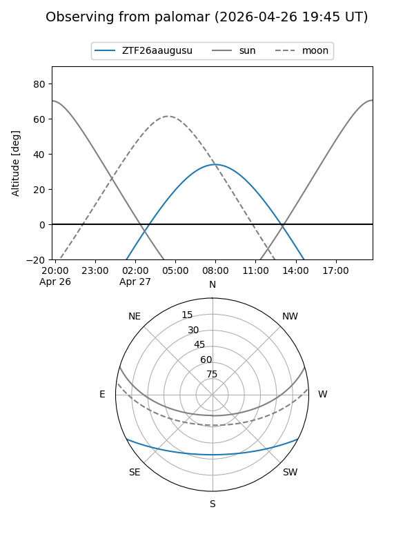

ZTF26aaugusu
Target ZTF26aaugusu at 2026-04-27 09:46
Aliases and brokers:
FINK: link
Lasair: link
ALeRCE: link
alt names
ZTF26aaugusu (ztf,fink_ztf)
Coordinates:
equatorial (ra, dec) = 217.7919,-22.47094
equatorial (HMS+DMS) = 14:31:10.06,-22:28:15.39
galactic (l, b) = (331.2716,+34.85392)
Flags:
Photometry:
last ztfg=18.91
2 ztfg detections
Lightcurve

Visibility


Additional plots